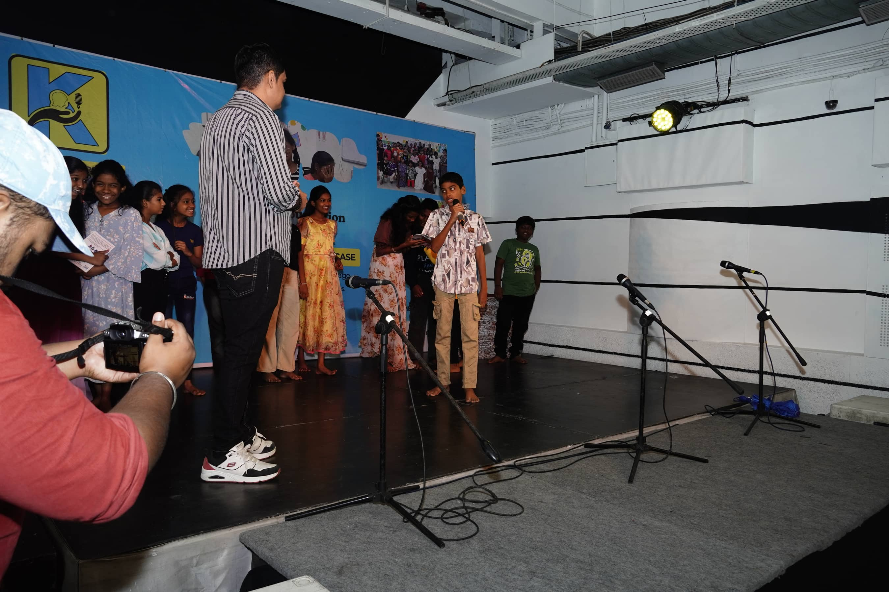

Karpanai Foundation was born from a simple question: what if children could learn about society by experiencing it, questioning it and creating something of their own?
As a child, Sriprada loved Social Science. History felt like stories. Civics felt like roleplay. Understanding society felt exciting.
Somewhere along the way, Social Science became something to memorise, score and forget. While teaching, she began seeing the consequences.
Students could define the Constitution but struggled to explain what their rights meant. They could memorise historical facts but struggled to connect them to the present.
Through theatre, storytelling, debate, writing, and simply being given a space to speak - art gave them confidence. But there was another question: could art also help them understand the world around them?
What began as an observation in one classroom became a foundation working across schools, shelter homes and community centres.
74 students. One question. A beginning.
Project Dhairiyam began with 74 government school students. Through theatre, storytelling, open mics, creative writing and other art forms, students were encouraged to explore their strengths and express themselves.
What began as a pilot became the seed for a larger idea: learning doesn't have to stay inside the textbook. The experience eventually evolved into Karpanai's broader Civic Imagination Studio model.
Recent reporting on Karpanai also traces the organisation's origins to Project Dhairiyam and describes its work with government schools, shelter homes and community centres in Chennai. (DT Next)

We exist to transform classrooms into Civic Imagination Studios where students learn Social Science through experiential learning and use art to understand, question, and express the issues around them.
A world where every classroom is a Civic Imagination Studio, nurturing informed, creative and engaged citizens who understand society, participate in democracy, and believe they can shape the future.
There is more than one way to learn.
Every child deserves access to meaningful learning and expression.
We encourage children to question, connect and think deeply.
Children are not just learners. They are thinkers, creators and participants.
We help young people imagine how society can be different.
Learning becomes powerful when it connects us to others.